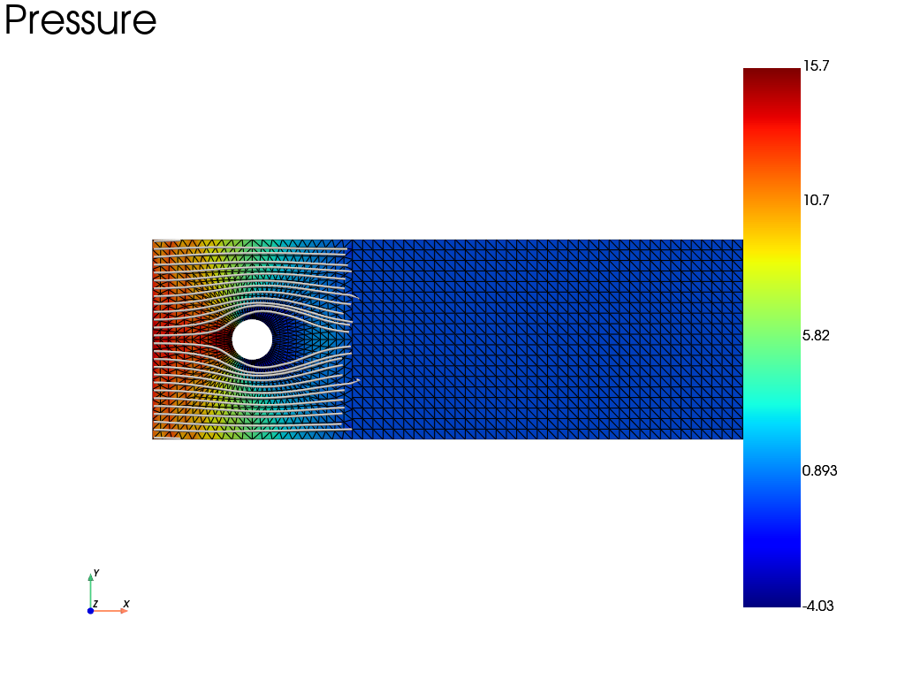

Note
Go to the end to download the full example code.
Transient Navier-Stokes flow around a cylinder with a user weak-form class
A nonlinear user weak form is written by subclassing
fedoo.core.weakform.WeakFormBase: update stores the current velocity,
pressure and velocity gradient at the Gauss points, set_start keeps the
velocity of the last converged increment, and get_weak_equation returns the
weak form linearized at the current state (tangent operator plus residual) for
the Newton-Raphson solver of fedoo.problem.NonLinear.
For an incompressible Newtonian fluid, with \(\boldsymbol{\sigma} = -p\,\mathbf{I} + 2\mu\,\mathbf{D}(\mathbf{v})\),
with a backward Euler time derivative. The mixed problem uses the stable
p1+/p1 element (bubble-enriched velocity, linear pressure).
The Reynolds number based on the cylinder diameter and on the final inflow velocity is \(Re = \rho U (2R) / \mu = 2000\), and 100 nonlinear time increments are computed. The inflow velocity is ramped and only reaches \(U = 1\) at the last increment. This example is illustrative and the flow is not resolved: the mesh Reynolds number \(\rho U h / \mu\) is about 500 in the wake, far above what the unstabilized Galerkin formulation used here can resolve, and a converged solution at this Reynolds number would be unsteady.
import fedoo as fd
import numpy as np
from fedoo.core.weakform import WeakFormBase
Nonlinear weak form linearized at the current state
class NavierStokes(WeakFormBase):
"""
Navier-Stokes weak formulation for incompressible Newtonian fluids.
This implementation uses a mixed velocity/pressure formulation.
It supports transient and non-linear convection terms.
Parameters
----------
rho: float or array
Density of the fluid.
mu: float or array
Dynamic viscosity of the fluid.
name: str, optional
Name of the weak form.
space: ModelingSpace, optional
Modeling space.
"""
def __init__(self, rho, mu, name="", space=None):
super().__init__(name, space)
self.rho = rho
self.mu = mu
# Velocity variables
self.space.new_variable("Vx")
self.space.new_variable("Vy")
if self.space.ndim == 3:
self.space.new_variable("Vz")
self.space.new_vector("V", ["Vx", "Vy", "Vz"])
else:
self.space.new_vector("V", ["Vx", "Vy"])
# Pressure variable
self.space.new_variable("P")
# Internal operators for updating sv
self._op_v = [
self.space.variable(name) for name in ["Vx", "Vy", "Vz"][: self.space.ndim]
]
self._op_p = self.space.variable("P")
self._grad_ops = []
for i in range(self.space.ndim):
var_name = ["Vx", "Vy", "Vz"][i]
for j in range(self.space.ndim):
crd_name = ["X", "Y", "Z"][j]
self._grad_ops.append(self.space.derivative(var_name, crd_name))
def initialize(self, assembly, pb):
"""Initialize state variables."""
assembly.sv["V"] = np.zeros((self.space.ndim, assembly.n_gauss_points))
assembly.sv["P"] = np.zeros(assembly.n_gauss_points)
assembly.sv["gradV"] = np.zeros((self.space.ndim**2, assembly.n_gauss_points))
self._v_start = np.zeros((self.space.ndim, assembly.n_gauss_points))
def set_start(self, assembly, pb):
"""Called at the beginning of a new time step."""
self._v_start = assembly.sv["V"].copy()
def update(self, assembly, pb):
"""Update current values from solution."""
sol = pb.get_dof_solution()
if np.isscalar(sol) and sol == 0:
return
v_results = []
for op in self._op_v:
v_results.append(assembly.get_gp_results(op, sol))
assembly.sv["V"] = np.array(v_results)
assembly.sv["P"] = assembly.get_gp_results(self._op_p, sol)
grads = []
for op in self._grad_ops:
grads.append(assembly.get_gp_results(op, sol))
assembly.sv["gradV"] = np.array(grads)
def get_weak_equation(self, assembly, pb):
"""Build the weak equation including tangent and residual."""
ndim = self.space.ndim
# Increments (operators)
V = [self.space.variable(["Vx", "Vy", "Vz"][i]) for i in range(ndim)]
P = self.space.variable("P")
# grad_V_inc[i][j] = dVi / dXj
grad_V_inc = [[None for _ in range(ndim)] for _ in range(ndim)]
for i in range(ndim):
for j in range(ndim):
grad_V_inc[i][j] = self.space.derivative(
["Vx", "Vy", "Vz"][i], ["X", "Y", "Z"][j]
)
# Current state
V_curr = assembly.sv["V"]
P_curr = assembly.sv["P"]
gradV_curr = assembly.sv["gradV"].reshape(ndim, ndim, -1)
# Time step
dt = pb.dtime
DiffOp = 0
# 1. Momentum Equations (Conservation of linear momentum)
for i in range(ndim):
# Viscous part: 2*mu*D_ij * delta_V_i,j = mu*(V_i,j + V_j,i) * delta_V_i,j
for j in range(ndim):
# Residual part
res_visc = self.mu * (gradV_curr[i, j] + gradV_curr[j, i])
# Tangent part
tan_visc = self.mu * (grad_V_inc[i][j] + grad_V_inc[j][i])
DiffOp += grad_V_inc[i][j].virtual * (res_visc + tan_visc)
# Pressure part in momentum equation: -P * div(delta_v)
# = -P * delta_Vi,i
DiffOp += grad_V_inc[i][i].virtual * (-P_curr - P)
# Convection part: rho * (V . grad) V
# Residual: rho * sum_j ( Vj_curr * gradVi,j_curr )
res_conv = self.rho * sum(V_curr[j] * gradV_curr[i, j] for j in range(ndim))
# Tangent: rho * sum_j ( dVj * gradVi,j_curr + Vj_curr * dgradVi,j )
tan_conv = self.rho * sum(
V[j] * gradV_curr[i, j] + V_curr[j] * grad_V_inc[i][j]
for j in range(ndim)
)
# Time derivative: rho * dV/dt
if dt != 0:
res_time = (self.rho / dt) * (V_curr[i] - self._v_start[i])
tan_time = (self.rho / dt) * V[i]
else:
res_time = 0
tan_time = 0
DiffOp += V[i].virtual * (res_conv + tan_conv + res_time + tan_time)
# 2. Continuity Equation (Conservation of mass: div(V) = 0)
# Residual: div(V_curr)
res_cont = sum(gradV_curr[i, i] for i in range(ndim))
# Tangent: div(dV)
tan_cont = sum(grad_V_inc[i][i] for i in range(ndim))
DiffOp += P.virtual * (res_cont + tan_cont)
# Axisymmetric case
if self.space._dimension == "2Daxi":
rr = assembly.sv["_R_gausspoints"]
# Add extra term for divergence in cylindrical coordinates: Vr/r
# Vr is Vx (radial)
res_cont_axi = V_curr[0] / rr
tan_cont_axi = V[0] / rr
DiffOp += P.virtual * (res_cont_axi + tan_cont_axi)
# Also extra viscous term: sigma_theta = -P + 2*mu*Vr/r
res_visc_axi = 2 * self.mu * V_curr[0] / rr
tan_visc_axi = 2 * self.mu * V[0] / rr
# Virtual work: sigma_theta * delta_eps_theta = sigma_theta * delta_Vr / r
DiffOp += V[0].virtual * (
1 / rr * (res_visc_axi + tan_visc_axi - P_curr - P)
)
DiffOp = DiffOp * ((2 * np.pi) * rr)
return DiffOp
Modeling space, fluid properties and weak form
space = fd.ModelingSpace("2D")
rho = 10.0 # density
mu = 0.1 # dynamic viscosity (low value to see some convection effects)
# NavierStokes weak form defined above
wf = NavierStokes(rho, mu)
Mesh: flow around a cylinder (hole in a plate) with a wake region
L1 = 100
R = 10
mesh1 = fd.mesh.hole_plate_mesh(
length=L1, height=L1, radius=R, elm_type="tri3", sym=False
)
# Add a wake region
mesh2 = fd.mesh.rectangle_mesh(
nx=40,
ny=20,
x_min=L1 / 2,
x_max=L1 / 2 + 200,
y_min=-L1 / 2,
y_max=L1 / 2,
elm_type="tri3",
)
mesh = fd.Mesh.stack(mesh1, mesh2)
mesh.merge_nodes(mesh.find_coincident_nodes())
Stable mixed element (P1+ / P1)
P1+ elements (linear triangles with bubble functions) for velocity, P1 elements for pressure.
internal_nodes = mesh.add_internal_nodes(1)
elm_type = "p1+/p1"
new_elm = fd.lib_elements.CombinedElement(elm_type, "tri3")
new_elm.set_variable_interpolation("Vx", "tri3bubble")
new_elm.set_variable_interpolation("Vy", "tri3bubble")
new_elm.set_variable_interpolation("P", "tri3")
Assembly, problem and boundary conditions
The Dirichlet values are ramped linearly from 0 over the simulated time (default time function). The outflow (right edge) is traction free, which also fixes the pressure level.
The two left corners belong both to the inlet and to a wall: they are removed
from the inlet nodes so that they keep the no-slip value (two Dirichlet
conditions with different values on the same dof would emit a
BoundaryConditionWarning, the last one added prevailing).
assembly = fd.Assembly.create(wf, mesh, elm_type=elm_type, name="assembling")
pb = fd.problem.NonLinear("assembling")
res = pb.add_output("results/navier_stokes", assembly, ["P", "V"])
left = mesh.find_nodes("X", mesh.bounding_box.xmin)
right = mesh.find_nodes("X", mesh.bounding_box.xmax)
bottom = mesh.find_nodes("Y", mesh.bounding_box.ymin)
top = mesh.find_nodes("Y", mesh.bounding_box.ymax)
hole = mesh.find_nodes("Point", np.array([0, 0]), R + 1e-3)
inlet = np.setdiff1d(left, np.hstack((bottom, top))) # left edge without corners
# Inlet velocity (horizontal inflow, no vertical velocity)
pb.bc.add("Dirichlet", inlet, "Vx", 1.0)
pb.bc.add("Dirichlet", inlet, "Vy", 0.0)
# No-slip on top and bottom (walls)
pb.bc.add("Dirichlet", bottom, "V", 0.0)
pb.bc.add("Dirichlet", top, "V", 0.0)
# No-slip on the cylinder
pb.bc.add("Dirichlet", hole, "V", 0.0)
# The pressure dof of the bubble nodes is not used by the P1 pressure interpolation:
# it is set to zero to remove it from the system.
pb.bc.add("Dirichlet", internal_nodes, "P", 0.0)
Dirichlet boundary condition:
var = 'P'
n_nodes = 3082
value = 0.0
Solve
pb.nlsolve(dt=1, tmax=100, update_dt=True)
Iter 1 - Time: 1.00000 - dt 1.00000 - NR iter: 1 - Err: 0.00049
Iter 2 - Time: 2.00000 - dt 1.25000 - NR iter: 1 - Err: 0.00076
Iter 3 - Time: 3.00000 - dt 1.25000 - NR iter: 1 - Err: 0.00076
Iter 4 - Time: 4.00000 - dt 1.25000 - NR iter: 1 - Err: 0.00071
Iter 5 - Time: 5.00000 - dt 1.25000 - NR iter: 1 - Err: 0.00064
Iter 6 - Time: 6.00000 - dt 1.25000 - NR iter: 1 - Err: 0.00057
Iter 7 - Time: 7.00000 - dt 1.25000 - NR iter: 1 - Err: 0.00053
Iter 8 - Time: 8.00000 - dt 1.25000 - NR iter: 1 - Err: 0.00049
Iter 9 - Time: 9.00000 - dt 1.25000 - NR iter: 1 - Err: 0.00048
Iter 10 - Time: 10.00000 - dt 1.25000 - NR iter: 1 - Err: 0.00049
Iter 11 - Time: 11.00000 - dt 1.25000 - NR iter: 1 - Err: 0.00051
Iter 12 - Time: 12.00000 - dt 1.25000 - NR iter: 1 - Err: 0.00053
Iter 13 - Time: 13.00000 - dt 1.25000 - NR iter: 1 - Err: 0.00057
Iter 14 - Time: 14.00000 - dt 1.25000 - NR iter: 1 - Err: 0.00061
Iter 15 - Time: 15.00000 - dt 1.25000 - NR iter: 1 - Err: 0.00065
Iter 16 - Time: 16.00000 - dt 1.25000 - NR iter: 1 - Err: 0.00070
Iter 17 - Time: 17.00000 - dt 1.25000 - NR iter: 1 - Err: 0.00075
Iter 18 - Time: 18.00000 - dt 1.25000 - NR iter: 1 - Err: 0.00080
Iter 19 - Time: 19.00000 - dt 1.25000 - NR iter: 1 - Err: 0.00086
Iter 20 - Time: 20.00000 - dt 1.25000 - NR iter: 1 - Err: 0.00091
Iter 21 - Time: 21.00000 - dt 1.25000 - NR iter: 1 - Err: 0.00096
Iter 22 - Time: 22.00000 - dt 1.25000 - NR iter: 1 - Err: 0.00100
Iter 23 - Time: 23.00000 - dt 1.25000 - NR iter: 1 - Err: 0.00106
Iter 24 - Time: 24.00000 - dt 1.25000 - NR iter: 1 - Err: 0.00112
Iter 25 - Time: 25.00000 - dt 1.25000 - NR iter: 1 - Err: 0.00115
Iter 26 - Time: 26.00000 - dt 1.25000 - NR iter: 1 - Err: 0.00116
Iter 27 - Time: 27.00000 - dt 1.25000 - NR iter: 1 - Err: 0.00129
Iter 28 - Time: 28.00000 - dt 1.25000 - NR iter: 1 - Err: 0.00146
Iter 29 - Time: 29.00000 - dt 1.25000 - NR iter: 1 - Err: 0.00157
Iter 30 - Time: 30.00000 - dt 1.25000 - NR iter: 1 - Err: 0.00269
Iter 31 - Time: 31.00000 - dt 1.25000 - NR iter: 1 - Err: 0.00428
Iter 32 - Time: 32.00000 - dt 1.25000 - NR iter: 2 - Err: 0.00014
Iter 33 - Time: 33.00000 - dt 1.25000 - NR iter: 1 - Err: 0.00024
Iter 34 - Time: 34.00000 - dt 1.25000 - NR iter: 1 - Err: 0.00026
Iter 35 - Time: 35.00000 - dt 1.25000 - NR iter: 1 - Err: 0.00025
Iter 36 - Time: 36.00000 - dt 1.25000 - NR iter: 1 - Err: 0.00028
Iter 37 - Time: 37.00000 - dt 1.25000 - NR iter: 1 - Err: 0.00033
Iter 38 - Time: 38.00000 - dt 1.25000 - NR iter: 1 - Err: 0.00038
Iter 39 - Time: 39.00000 - dt 1.25000 - NR iter: 1 - Err: 0.00043
Iter 40 - Time: 40.00000 - dt 1.25000 - NR iter: 1 - Err: 0.00048
Iter 41 - Time: 41.00000 - dt 1.25000 - NR iter: 1 - Err: 0.00052
Iter 42 - Time: 42.00000 - dt 1.25000 - NR iter: 1 - Err: 0.00057
Iter 43 - Time: 43.00000 - dt 1.25000 - NR iter: 1 - Err: 0.00061
Iter 44 - Time: 44.00000 - dt 1.25000 - NR iter: 1 - Err: 0.00066
Iter 45 - Time: 45.00000 - dt 1.25000 - NR iter: 1 - Err: 0.00070
Iter 46 - Time: 46.00000 - dt 1.25000 - NR iter: 1 - Err: 0.00074
Iter 47 - Time: 47.00000 - dt 1.25000 - NR iter: 1 - Err: 0.00079
Iter 48 - Time: 48.00000 - dt 1.25000 - NR iter: 1 - Err: 0.00083
Iter 49 - Time: 49.00000 - dt 1.25000 - NR iter: 1 - Err: 0.00087
Iter 50 - Time: 50.00000 - dt 1.25000 - NR iter: 1 - Err: 0.00091
Iter 51 - Time: 51.00000 - dt 1.25000 - NR iter: 1 - Err: 0.00096
Iter 52 - Time: 52.00000 - dt 1.25000 - NR iter: 1 - Err: 0.00101
Iter 53 - Time: 53.00000 - dt 1.25000 - NR iter: 1 - Err: 0.00106
Iter 54 - Time: 54.00000 - dt 1.25000 - NR iter: 1 - Err: 0.00111
Iter 55 - Time: 55.00000 - dt 1.25000 - NR iter: 1 - Err: 0.00116
Iter 56 - Time: 56.00000 - dt 1.25000 - NR iter: 1 - Err: 0.00121
Iter 57 - Time: 57.00000 - dt 1.25000 - NR iter: 1 - Err: 0.00125
Iter 58 - Time: 58.00000 - dt 1.25000 - NR iter: 1 - Err: 0.00130
Iter 59 - Time: 59.00000 - dt 1.25000 - NR iter: 1 - Err: 0.00135
Iter 60 - Time: 60.00000 - dt 1.25000 - NR iter: 1 - Err: 0.00141
Iter 61 - Time: 61.00000 - dt 1.25000 - NR iter: 1 - Err: 0.00147
Iter 62 - Time: 62.00000 - dt 1.25000 - NR iter: 1 - Err: 0.00153
Iter 63 - Time: 63.00000 - dt 1.25000 - NR iter: 1 - Err: 0.00158
Iter 64 - Time: 64.00000 - dt 1.25000 - NR iter: 1 - Err: 0.00164
Iter 65 - Time: 65.00000 - dt 1.25000 - NR iter: 1 - Err: 0.00169
Iter 66 - Time: 66.00000 - dt 1.25000 - NR iter: 1 - Err: 0.00175
Iter 67 - Time: 67.00000 - dt 1.25000 - NR iter: 1 - Err: 0.00181
Iter 68 - Time: 68.00000 - dt 1.25000 - NR iter: 1 - Err: 0.00187
Iter 69 - Time: 69.00000 - dt 1.25000 - NR iter: 1 - Err: 0.00192
Iter 70 - Time: 70.00000 - dt 1.25000 - NR iter: 1 - Err: 0.00198
Iter 71 - Time: 71.00000 - dt 1.25000 - NR iter: 1 - Err: 0.00203
Iter 72 - Time: 72.00000 - dt 1.25000 - NR iter: 1 - Err: 0.00209
Iter 73 - Time: 73.00000 - dt 1.25000 - NR iter: 1 - Err: 0.00215
Iter 74 - Time: 74.00000 - dt 1.25000 - NR iter: 1 - Err: 0.00222
Iter 75 - Time: 75.00000 - dt 1.25000 - NR iter: 1 - Err: 0.00230
Iter 76 - Time: 76.00000 - dt 1.25000 - NR iter: 1 - Err: 0.00237
Iter 77 - Time: 77.00000 - dt 1.25000 - NR iter: 1 - Err: 0.00243
Iter 78 - Time: 78.00000 - dt 1.25000 - NR iter: 1 - Err: 0.00249
Iter 79 - Time: 79.00000 - dt 1.25000 - NR iter: 1 - Err: 0.00255
Iter 80 - Time: 80.00000 - dt 1.25000 - NR iter: 1 - Err: 0.00261
Iter 81 - Time: 81.00000 - dt 1.25000 - NR iter: 1 - Err: 0.00268
Iter 82 - Time: 82.00000 - dt 1.25000 - NR iter: 1 - Err: 0.00275
Iter 83 - Time: 83.00000 - dt 1.25000 - NR iter: 1 - Err: 0.00282
Iter 84 - Time: 84.00000 - dt 1.25000 - NR iter: 1 - Err: 0.00291
Iter 85 - Time: 85.00000 - dt 1.25000 - NR iter: 1 - Err: 0.00300
Iter 86 - Time: 86.00000 - dt 1.25000 - NR iter: 1 - Err: 0.00309
Iter 87 - Time: 87.00000 - dt 1.25000 - NR iter: 1 - Err: 0.00318
Iter 88 - Time: 88.00000 - dt 1.25000 - NR iter: 1 - Err: 0.00326
Iter 89 - Time: 89.00000 - dt 1.25000 - NR iter: 1 - Err: 0.00333
Iter 90 - Time: 90.00000 - dt 1.25000 - NR iter: 1 - Err: 0.00342
Iter 91 - Time: 91.00000 - dt 1.25000 - NR iter: 1 - Err: 0.00355
Iter 92 - Time: 92.00000 - dt 1.25000 - NR iter: 1 - Err: 0.00356
Iter 93 - Time: 93.00000 - dt 1.25000 - NR iter: 1 - Err: 0.00392
Iter 94 - Time: 94.00000 - dt 1.25000 - NR iter: 1 - Err: 0.00400
Iter 95 - Time: 95.00000 - dt 1.25000 - NR iter: 1 - Err: 0.00432
Iter 96 - Time: 96.00000 - dt 1.25000 - NR iter: 2 - Err: 0.00008
Iter 97 - Time: 97.00000 - dt 1.25000 - NR iter: 1 - Err: 0.00009
Iter 98 - Time: 98.00000 - dt 1.25000 - NR iter: 1 - Err: 0.00021
Iter 99 - Time: 99.00000 - dt 1.25000 - NR iter: 1 - Err: 0.00034
Iter 100 - Time: 100.00000 - dt 1.25000 - NR iter: 1 - Err: 0.00046
Pressure field and streamlines at the last increment
Streamlines are not part of the fedoo plot function: they are added with
PyVista on the plotted mesh (res.meshplot), with a zero out-of-plane
velocity component.
pl = res.plot("P", show=False, title="Pressure")
res.meshplot["velocity"] = np.c_[res["V"].T, np.zeros(mesh.n_nodes)]
line_streamlines = res.meshplot.streamlines(
"velocity",
pointa=(mesh.bounding_box.xmin + 1, mesh.bounding_box.ymin + 1, 0),
pointb=(mesh.bounding_box.xmin + 1, mesh.bounding_box.ymax - 1, 0),
n_points=25,
max_length=500.0,
)
pl.add_mesh(line_streamlines.tube(radius=0.5), color="white")
pl.show()

Total running time of the script: (0 minutes 2.530 seconds)